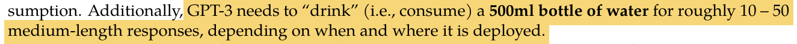
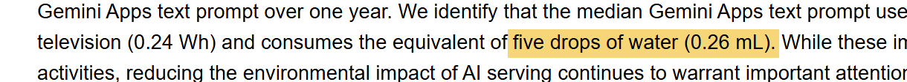
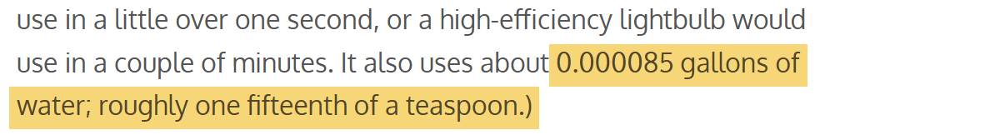
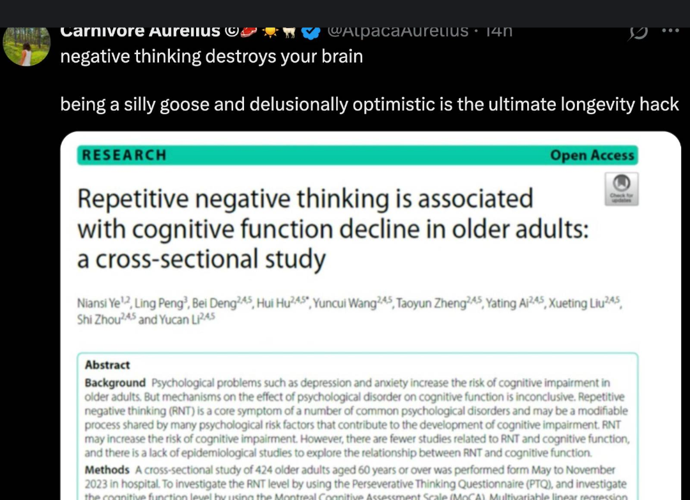
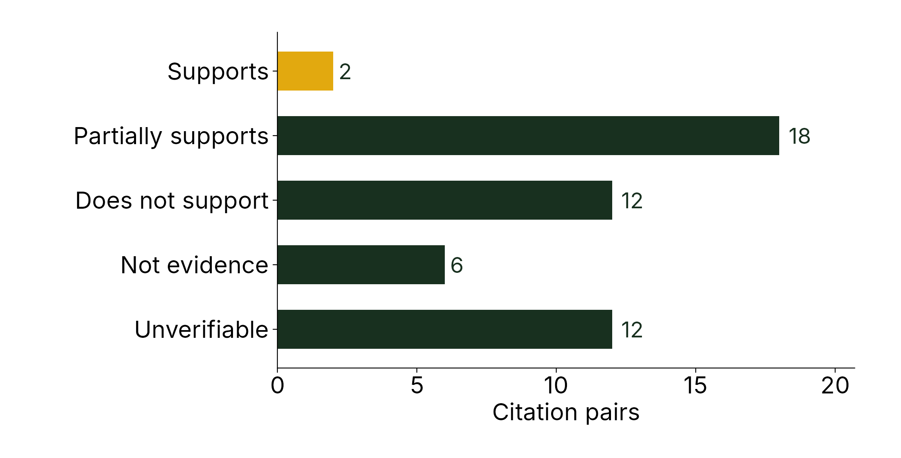
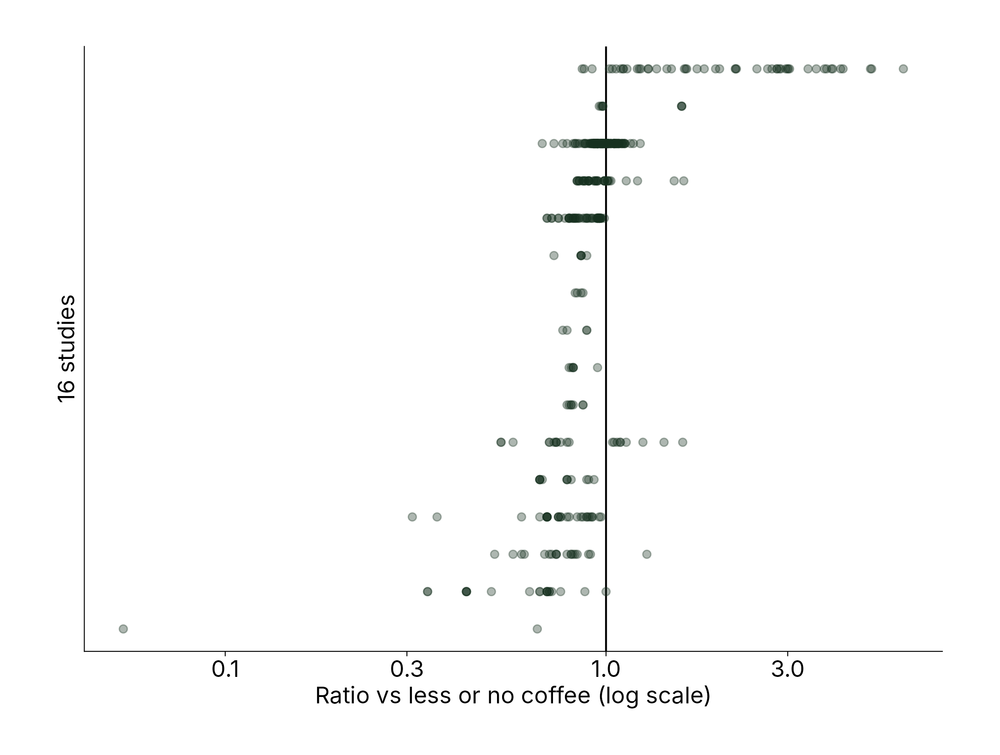
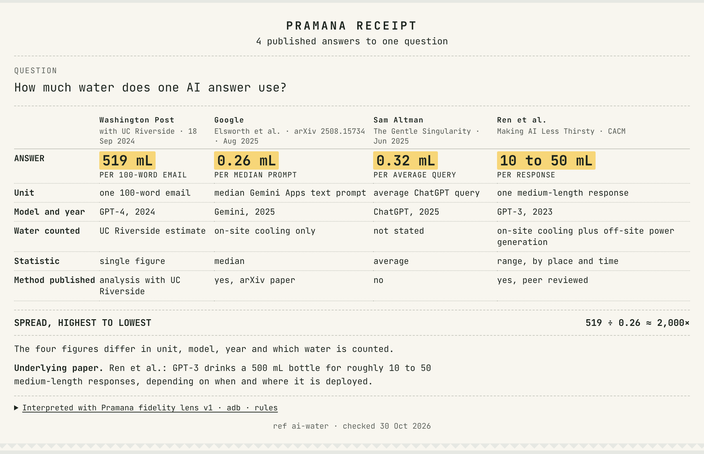
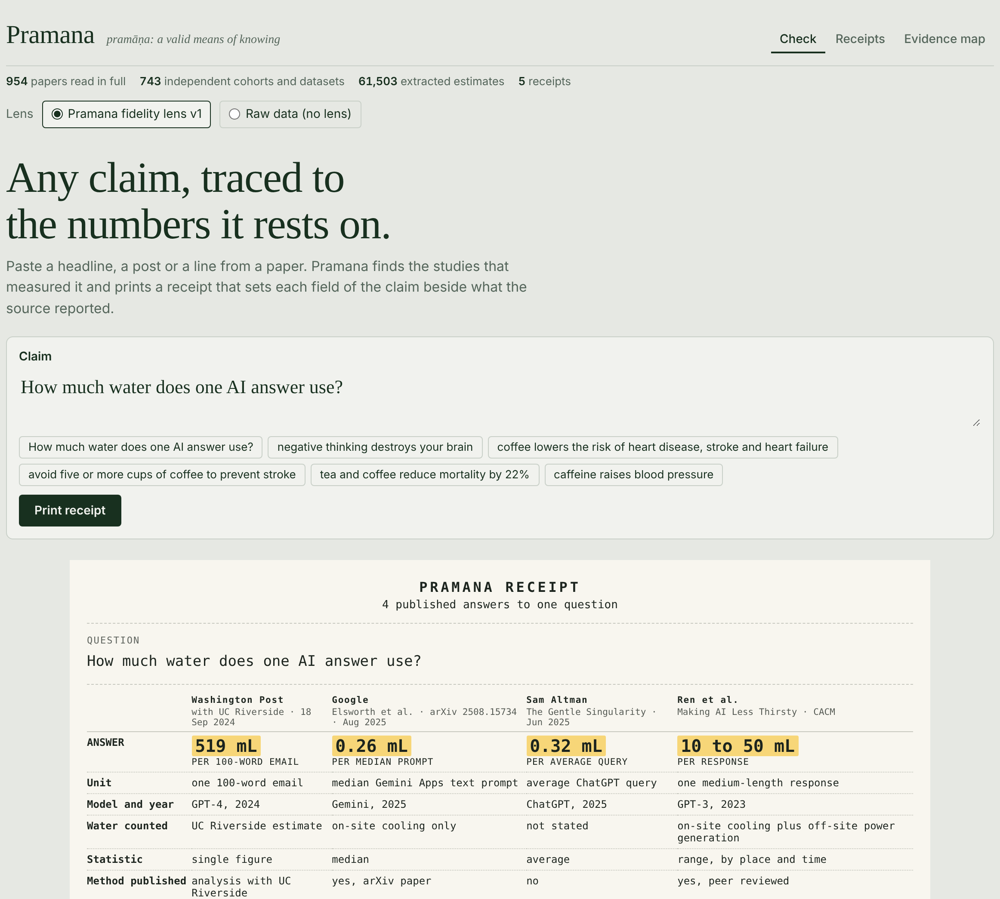
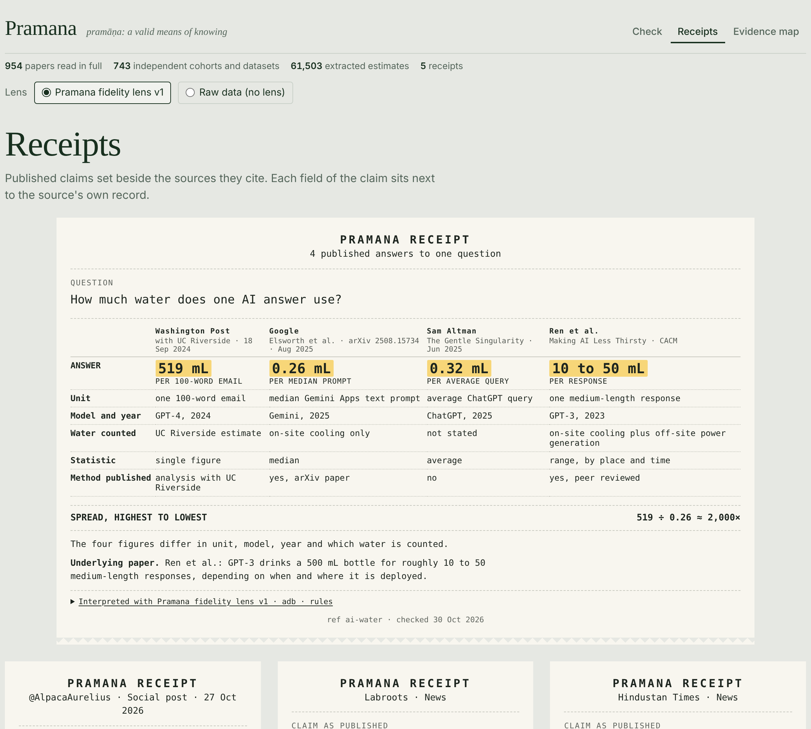
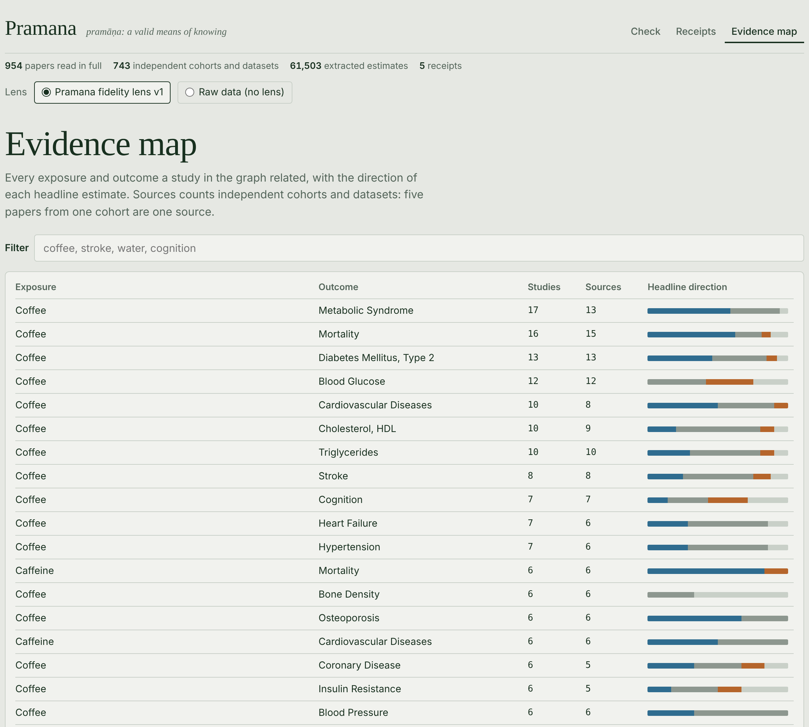

Field Station Rajasthan · 30 October 2026
pramāṇa (Sanskrit): a valid means of knowing
Any claim, traced to the numbers it rests on.
Amruth Deepak Bhat
Built on Logos
519 mL
A bottle, per 100-word email
Ren et al., Making AI Less “Thirsty”

Washington Post, Sept 2024, using the method of this UC Riverside paper
0.26 mL
Five drops, per Gemini prompt
Measuring the environmental impact of delivering AI at Google scale

Elsworth et al., Google, arXiv, Aug 2025
0.32 mL
A fifteenth of a teaspoon, per query
The Gentle Singularity

Sam Altman, blog, June 2025
Each dot is 0.26 mL, Google’s figure. All 2,000 together make the Washington Post’s 519 mL.
| Washington Post | Sam Altman | ||
|---|---|---|---|
| Unit | a 100-word email | the median text prompt | the average query |
| Model, year | GPT-4, 2024 | Gemini, 2025 | ChatGPT, 2025 |
| Water counted | cooling + power plants | on-site cooling only | not stated |
| Statistic | one figure | median | average |
| Method shown | yes, with UC Riverside | yes, arXiv paper | no |
The Post counts water used to generate the electricity; Google counts only cooling water at the data center; Altman does not say. The news coverage did not report which.
0 of 634
claims about AI water, in 77 news stories, link to the study they rest on.

Moses showed me this post on day five. The paper studied 424 adults over 60 in one city, measured once; the most negative thinkers scored 1.6 points lower on a 30-point test.
We checked each of the 50 sentences in the Wuhan paper that cite another study against the study it cites.
Two are fully supported. Its line that negative thinking “depletes the brain’s limited resources” cites an eye-tracking experiment on attention.

pratyakṣa
perception
The measurement: 424 people, one test, one number.
anumāna
inference
What the design permits: association, not cause.
upamāna
comparison
Every other study on the same question.
śabda
testimony
The headline, the post, the press release.
Almost everything we know about science arrives as śabda. Pramana walks each piece of testimony back to the perception and inference underneath it, and sets it beside the comparisons.
negative thinking destroys your brain
| Field | Paper | Post | Difference, fidelity lens v1 |
|---|---|---|---|
| Subject | repetitive negative thinking | negative thinking | none |
| Outcome | MoCA score, a 30-point test | your brain | measure read as organ |
| Relation | associated with | destroys | association read as cause |
| Size | 1.6 points lower | destroys | inflated |
| Population | 424 adults over 60, Wuhan | you | overgeneralized |
| Certainty | “further studies needed” | stated as fact | hedge dropped |
Each row is a study; each dot is one estimate it reports, for one dose, subgroup or model. Most sit just below 1.
A headline picks one dot. Pramana shows the whole field, with each dot linked to its sentence.

Paste a headline, a post or a sentence. The app breaks it into subject, outcome, population, effect size and certainty, and compares each with the papers that measured it.
It does not output true or false. It shows the numbers and where they came from.


Check
Paste any claim. See its receipt and the studies that measured it.

Receipts
Published claims set against the sources they cite.

Evidence map
Every exposure and outcome in the knowledge base, with the direction of each study’s headline estimate.
Same prompts, model versions and schema, each pinned by hash. Contributors bring their own API keys.
Estimates, intervals, populations and designs, each with a pointer to its sentence. Two independent extractions must agree. No verdicts.
A lens decides what counts as faithful, inflated or causal. Pramana’s fidelity lens v1 is one. Anyone can publish another.
Query a local copy through any lens, or none. Where two lenses disagree, the reader sees both.
Judgments never enter the data layer. People can argue about lenses because the facts underneath are shared.
1 · Sources
PubMed Central
full text, JATS XML
OpenAlex
open PDFs; abstracts otherwise
News and posts
RSS, pages, screenshots
2 · Read
Parse
sections, tables, figures
Reader A
Claude Haiku
Reader B
Laya, open model, our GPU
3 · Check
Validate
schema, units, ranges
Agreement gate
A vs B, field by field
Judge
Claude Sonnet on disputes
4 · Know
Concepts
MeSH and Wikidata IDs
Evidence graph
DuckDB, 1,055 papers
Lenses
signed rules that interpret the data
5 · Share
Snapshot
SQLite, content-addressed
Logos Storage
retrieve by content ID
Basecamp module
queries run locally
Pramana protocol
Stages 1 to 4, pinned by hash. Anyone can run them with their own API keys. Lenses sit on top.
Pramana app
One reader of the shared knowledge base.
The pipeline records input and output hashes in an append-only ledger, and every extracted number keeps a pointer to the sentence, table or figure it came from.
Fetch the full text, tables and supplements
Two models extract every estimate independently
A judge settles where they disagree
Concepts pinned to Wikidata IDs
Claims matched to the evidence
1,055
papers, seven topics
61,000+
numbers, each linked to its sentence
14¢
per paper, all in
Without it, every user would have to trust my server, my copy of the data and my logs.
| What a receipt needs | Logos does the work | Status |
|---|---|---|
| Proof it wasn’t edited after printing | Storage: every evidence snapshot has a content ID | live |
| Looking up a claim reveals nothing about you | Basecamp: the graph runs on your machine | built |
| Readers add the source a post left out | Messaging: notes travel peer to peer | next |
| Notes agreed across sides outrank one side | Blockchain: stake on bridging ratings | next |
1
Paste the water question into Pramana in Basecamp
2
Read the receipt, field by field
3
Open the sentence each number came from
4
Match the snapshot’s content ID on Logos Storage
Then yours: bring any claim about coffee, aging, diabetes or AI water.
| Threat | Defense |
|---|---|
| A tampered snapshot | Content ID mismatch; the module refuses it |
| A model misreads a paper | Two readers, a judge, and every number points to its sentence |
| Someone logs what you check | Queries never leave your device |
| A biased verdict | Verdicts live in signed, swappable lenses, never in the data |
| Brigaded notes | Bridging ratings with stake (next) |
Open-access papers read in full; paywalled ones from the abstract only, and labeled so.
1,055 papers is a sample, not a library.
Extraction accuracy against human annotators: not yet measured.
English text only.
| Who | What they can see |
|---|---|
| You | Your claim, your receipt, the full evidence graph on your own disk |
| Me | Nothing. No account, no server, no analytics |
| Logos Storage nodes | The public snapshot, never the questions asked of it |
| A note you choose to post | Signed with your key |
Lookups run on the user’s machine, so checking a health or political claim leaves no record anywhere. Two of the seven topics came from residents’ requests this week.
A receipt beside every science claim, checked before it ships.
Notes that carry the numbers, not just a link.
Answers that cite receipts instead of memory, through an MCP server.
Water permits for data centers in Rajasthan decided on counted water, not headlines.
Every number in an expert report traced to its source.
A citation audit of each manuscript before it is accepted.
A map of where evidence is thin, to decide which replications to pay for.
Questions that resolve on the evidence record.
Paste a line before it ships. The receipt goes in the footnote.
The graph is the first pass of a systematic review, at 14¢ a paper instead of a month of reading.
Labs and journal clubs add the papers in their field, with their own API keys.
Feedback: disputes filed by readers become labeled examples for retraining the open extraction model. An MCP server lets AI agents query the same knowledge base.
Protocol spec and contributor tool published. Basecamp app on testnet. Snapshots on Logos Storage. 10,000 papers.
Two desks use it for a month. Accuracy measured against human annotators. A public report of what broke.
Agreement checking across independent contributors. Notes over Messaging. MCP server. Self-audit. A named operator running a node.
Goal
A public record of what the evidence says, grown by anyone and owned by no one.
Next time someone tells you how much water your question used, ask which water they counted.
Amruth Deepak Bhat
github.com/adb3502/pramana · adb3502.github.io/pramana-protocol